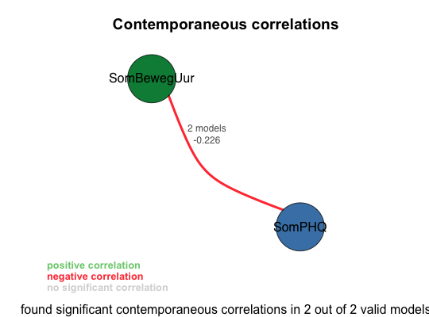
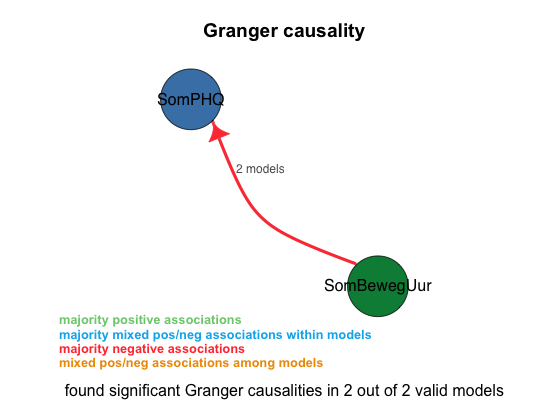

var_info(varest, log_level = 0)
varestThis function prints a summary and the output of the tests for a VAR model. The tests it shows are the Eigenvalue stability condition, the Portmanteau tests, the Jarque-Bera tests, the sk tests, the Granger causality Wald tests, and Stata's estat ic.
av_state <- load_file("../data/input/pp1 nieuw compleet.sav",log_level=3) av_state <- var_main(av_state,c('SomBewegUur','SomPHQ'),criterion='BIC',log_level=3)==================== var_main(av_state, vars = c("SomBewegUur", "SomPHQ"), log_level = 3, criterion = "BIC", numcores = 8L) Starting VAR (using 8 cores) with variables: SomBewegUur, SomPHQ ==================== Done. Processed 17 distinct models, of which 2 were valid. Tested 25 of 72 ( 34.72%) of the combinatorial search space at the given lags (1, 2).
Granger causality legend: + majority positive associations ~ majority mixed pos/neg associations within models - majority negative associations # mixed pos/neg associations among models Granger causality summary of all 16 unrestricted models: 62.50% SomBewegUur -Granger causes- SomPHQ (7 models +3 almost) (sign: 10 -) 37.50% <None> (6 models) Granger causality summary of all 2 valid models: 100.00% SomBewegUur -Granger causes- SomPHQ (2 models) (sign: 2 -) Granger causality summary of all 1 valid unrestricted models: 100.00% SomBewegUur -Granger causes- SomPHQ (1 model) (sign: 1 -)
Summary of all valid models: lag: 100.00% 2 (2 models) apply_log_transform: 100.00% FALSE (2 models) The valid models (sorted by BIC score): A: (AIC: 631.222, BIC: 655.411) : SomBewegUur -Granger causes- SomPHQ (0.0325) Lag: 2 Log transform: NO Exogenous variables: SomBewegUur outliers (3.5x std. of res.): 13 SomPHQ outliers (3.5x std. of res.): 4 Constraints: [SomBewegUur]SomPHQ.l1 = 0 [SomBewegUur]SomPHQ.l2 = 0 [SomBewegUur]SomPHQ_outliers = 0 [SomPHQ]SomPHQ.l2 = 0 Resulting Formulas: SomBewegUur = SomBewegUur.l1 + SomBewegUur.l2 + const + SomBewegUur_outliers SomPHQ = SomBewegUur.l1 + SomPHQ.l1 + SomBewegUur.l2 + const + SomBewegUur_outliers + SomPHQ_outliers B: (AIC: 633.66, BIC: 667.524) : SomBewegUur -Granger causes- SomPHQ (0.0463) Lag: 2 Log transform: NO Exogenous variables: SomBewegUur outliers (3.5x std. of res.): 13 SomPHQ outliers (3.5x std. of res.): 4 Constraints: none# av_state is the result of a call to var_main var_info(av_state$accepted_models[[1]]$varest)VAR Estimation Results: ========================= Endogenous variables: SomBewegUur, SomPHQ Deterministic variables: const Sample size: 83 Log Likelihood: -305.611 Roots of the characteristic polynomial: 0.78 0.432 0.3169 0 Call: VAR(y = data, p = lag, exogen = ..1) Estimation results for equation SomBewegUur: ============================================ SomBewegUur = SomBewegUur.l1 + SomBewegUur.l2 + const + SomBewegUur_outliers Estimate Std. Error t value Pr(>|t|) SomBewegUur.l1 0.46313 0.09455 4.898 5.04e-06 *** SomBewegUur.l2 0.24718 0.09499 2.602 0.011060 * const 2.22633 0.60275 3.694 0.000405 *** SomBewegUur_outliers -7.19848 1.52243 -4.728 9.72e-06 *** --- Signif. codes: '***' <=0.001, '**' <=0.01, '*' <=0.05, '.' <=0.10 Residual standard error: 1.513 on 79 degrees of freedom Multiple R-Squared: 0.5657, Adjusted R-squared: 0.5492 F-statistic: 34.3 on 3 and 79 DF, p-value: 2.683e-14 Estimation results for equation SomPHQ: ======================================= SomPHQ = SomBewegUur.l1 + SomPHQ.l1 + SomBewegUur.l2 + const + SomBewegUur_outliers + SomPHQ_outliers Estimate Std. Error t value Pr(>|t|) SomBewegUur.l1 -0.27182 0.10540 -2.579 0.01182 * SomBewegUur.l2 0.13832 0.10839 1.276 0.20574 SomPHQ.l1 0.43196 0.09216 4.687 1.18e-05 *** const 7.76992 1.34925 5.759 1.65e-07 *** SomBewegUur_outliers -5.31474 1.71731 -3.095 0.00275 ** SomPHQ_outliers -7.28106 1.72815 -4.213 6.78e-05 *** --- Signif. codes: '***' <=0.001, '**' <=0.01, '*' <=0.05, '.' <=0.10 Residual standard error: 1.68 on 77 degrees of freedom Multiple R-Squared: 0.393, Adjusted R-squared: 0.3536 F-statistic: 9.971 on 5 and 77 DF, p-value: 2.211e-07 Covariance matrix of residuals: SomBewegUur SomPHQ SomBewegUur 2.3800 -0.5958 SomPHQ -0.5958 2.8606 Correlation matrix of residuals: SomBewegUur SomPHQ SomBewegUur 1.00000 NA p 0.00000 NA SomPHQ -0.22834 1 p 0.03787 0 Eigenvalue stability condition Eigenvalue Modulus 1 0.7800175 0.7800175 2 0.4319560 0.4319560 3 -0.3168894 0.3168894 4 0.0000000 0.0000000 PASS: All the eigen values lie in the unit circle. VAR satisfies stability condition. Portmanteau tests for white noise SomBewegUur: Portmanteau (Q) statistic = 38.61956 Prob > chi2(39) = 0.4870685 SomBewegUur squared: Portmanteau (Q) statistic = 42.25662 Prob > chi2(39) = 0.3321387 SomPHQ: Portmanteau (Q) statistic = 51.11229 Prob > chi2(39) = 0.09267092 SomPHQ squared: Portmanteau (Q) statistic = 34.69628 Prob > chi2(39) = 0.6664694 PASS: There is no autocorrelation in the residuals. Jarque-Bera, Skewness, and Kurtosis tests Jarque-Bera test: chi2 df P SomBewegUur 2.38672451 2 0.3032001 SomPHQ 0.09485039 2 0.9536818 ALL 2.48157491 4 0.6479381 Skewness test: Skewness chi2 df P SomBewegUur 0.37183759 1.91264080 1 0.1666702 SomPHQ 0.08192557 0.09284654 1 0.7605891 ALL NA 2.00548735 2 0.3668715 Kurtosis test: Kurtosis chi2 df P SomBewegUur 3.370249 0.474083710 1 0.4911144 SomPHQ 2.975929 0.002003852 1 0.9642951 ALL NA 0.476087562 2 0.7881682 PASS: Unable to reject null hypothesis that residuals are normally distributed. Skewness and Kurtosis tests (sktest) Obs Pr_Skewness Pr_Kurtosis adj_chi2 P SomBewegUur 83 0.1131846 0.1069179 5.040775 0.08042843 SomPHQ 83 0.7194485 0.3156057 1.165817 0.55827224 PASS: Unable to reject null hypothesis that residuals are normally distributed. Granger causality Wald tests Equation Excluded sign chi2 df P 1 SomPHQ SomBewegUur - 6.855956 2 0.03245249 Vargranger causes: SomBewegUur -Granger causes- SomPHQ (0.0325) estat ic Obs ll df AIC BIC orig_AIC orig_BIC 1 83 -305.6112 10 631.2224 655.4108 631.2224 655.4108var_info(av_state$rejected_models[[1]]$varest)VAR Estimation Results: ========================= Endogenous variables: SomBewegUur, SomPHQ Deterministic variables: const Sample size: 84 Log Likelihood: -339.743 Roots of the characteristic polynomial: 0.6565 0.3131 Call: VAR(y = data, p = lag, exogen = ..1) Estimation results for equation SomBewegUur: ============================================ SomBewegUur = SomBewegUur.l1 + SomPHQ.l1 + const Estimate Std. Error t value Pr(>|t|) SomBewegUur.l1 0.62749 0.08602 7.295 1.81e-10 *** SomPHQ.l1 -0.07137 0.09368 -0.762 0.4484 const 3.53590 1.30880 2.702 0.0084 ** --- Signif. codes: '***' <=0.001, '**' <=0.01, '*' <=0.05, '.' <=0.10 Residual standard error: 1.79 on 81 degrees of freedom Multiple R-Squared: 0.4025, Adjusted R-squared: 0.3878 F-statistic: 27.29 on 2 and 81 DF, p-value: 8.729e-10 Estimation results for equation SomPHQ: ======================================= SomPHQ = SomBewegUur.l1 + SomPHQ.l1 + const Estimate Std. Error t value Pr(>|t|) SomBewegUur.l1 -0.12789 0.09353 -1.367 0.1753 SomPHQ.l1 0.34215 0.10187 3.359 0.0012 ** const 8.61157 1.42318 6.051 4.26e-08 *** --- Signif. codes: '***' <=0.001, '**' <=0.01, '*' <=0.05, '.' <=0.10 Residual standard error: 1.946 on 81 degrees of freedom Multiple R-Squared: 0.1446, Adjusted R-squared: 0.1235 F-statistic: 6.848 on 2 and 81 DF, p-value: 0.001787 Covariance matrix of residuals: SomBewegUur SomPHQ SomBewegUur 3.2036 0.3473 SomPHQ 0.3473 3.7879 Correlation matrix of residuals: SomBewegUur SomPHQ SomBewegUur 1.00000 NA p 0.00000 NA SomPHQ 0.09969 1 p 0.36695 0 Eigenvalue stability condition Eigenvalue Modulus 1 0.6565204 0.6565204 2 0.3131188 0.3131188 PASS: All the eigen values lie in the unit circle. VAR satisfies stability condition. Portmanteau tests for white noise SomBewegUur: Portmanteau (Q) statistic = 41.30083 Prob > chi2(40) = 0.4135921 SomBewegUur squared: Portmanteau (Q) statistic = 30.12343 Prob > chi2(40) = 0.8717499 SomPHQ: Portmanteau (Q) statistic = 45.47917 Prob > chi2(40) = 0.2544755 SomPHQ squared: Portmanteau (Q) statistic = 40.48387 Prob > chi2(40) = 0.4489041 PASS: There is no autocorrelation in the residuals. Jarque-Bera, Skewness, and Kurtosis tests Jarque-Bera test: chi2 df P SomBewegUur 15.87456 2 3.571768e-04 SomPHQ 12.15235 2 2.296945e-03 ALL 28.02691 4 1.231727e-05 Failed for: SomBewegUur, SomPHQ, ALL Skewness test: Skewness chi2 df P SomBewegUur -0.4636820 3.010014 1 0.08275157 SomPHQ -0.5461681 4.176194 1 0.04099566 ALL NA 7.186209 2 0.02751279 Failed for: SomPHQ, ALL Kurtosis test: Kurtosis chi2 df P SomBewegUur 4.917181 12.864545 1 3.348663e-04 SomPHQ 4.509603 7.976156 1 4.739747e-03 ALL NA 20.840701 2 2.981942e-05 Failed for: SomBewegUur, SomPHQ, ALL FAIL: Residuals are significantly not normally distributed. Skewness and Kurtosis tests (sktest) Obs Pr_Skewness Pr_Kurtosis adj_chi2 P SomBewegUur 84 0.05914226 0.003708804 10.175840 0.006170841 SomPHQ 84 0.02848603 0.009425137 9.855211 0.007243829 Failed for: SomBewegUur, SomPHQ FAIL: Residuals are significantly not normally distributed. Granger causality Wald tests Equation Excluded sign chi2 df P 1 SomBewegUur SomPHQ 0.5803549 1 0.4461733 2 SomPHQ SomBewegUur 1.8695427 1 0.1715275 No significant Granger causes detected. estat ic Obs ll df AIC BIC orig_AIC orig_BIC 1 84 -339.7429 6 691.4859 706.0708 691.4859 706.0708